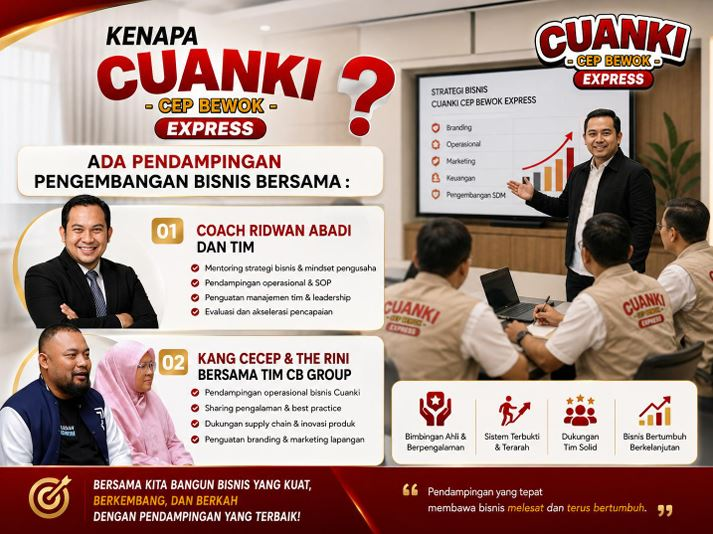

Brand yang Bertumbuh
Berawal dari Cuanki Instant dan berkembang menjadi brand mandiri dengan semangat ekspansi.
Dari produk Cuanki Instant, kini hadir Cuanki Cep Bewok Express. Nikmati peluang usaha dengan penyajian praktis, pilihan rasa khas, dan format kemitraan yang fleksibel.
Produk yang mudah disiapkan, karakter rasa yang khas, dan konsep usaha yang dapat dikembangkan bersama mitra.
Berawal dari Cuanki Instant dan berkembang menjadi brand mandiri dengan semangat ekspansi.
Karakter ikan dan tahu lebih terasa, dengan bumbu yang memberikan ciri pada setiap varian.
Cuanki dapat disiapkan dengan cara direbus atau diseduh mengikuti petunjuk penyajian.
Tersedia pilihan format stan portable, stan permanen, hingga gerobak keliling.
Mitra dibekali pengetahuan produk, komposisi varian, dan standar penyajian.
Kemitraan turut terhubung dengan program wakaf produktif Pondok Peradaban Sukses Berkah.
Pilih format usaha sesuai kebutuhan lokasi dan cara berjualan yang ingin dijalankan.

Format stan ringkas untuk memulai usaha di area kaki lima, bazar, dan event.
Format usaha dengan area display dan pelayanan yang lebih tertata untuk lokasi tetap.

Konsep usaha bergerak untuk mendekati pelanggan di berbagai titik keramaian.
*Rincian fasilitas, harga, dan ketentuan paket mengikuti informasi resmi dari tim kemitraan.
Berikut gambaran proyeksi keuangan yang tercantum dalam prospektus kemitraan.
Harga jual rata-rata Rp20.000 per porsi, operasional 25 hari per bulan, dan biaya bahan baku 60% dari omzet.
| Penjualan per Hari | 75 Porsi | 100 Porsi | 150 Porsi |
|---|---|---|---|
| ROI per Bulan | 44% | 64% | 104% |
| Estimasi BEP | 2,27 Bulan | 1,56 Bulan | 0,96 Bulan |
Sumber: Prospektus Kemitraan Cuanki Cep Bewok Express. Angka ditampilkan sebagai proyeksi sesuai dokumen, bukan janji hasil usaha.
Cuanki dengan karakter ikan dan tahu yang terasa, dipadukan dengan bumbu khas di setiap varian.
.png)
Rasa gurih klasik dengan aroma bawang yang akrab. Cocok untuk penyuka rasa klasik.

Perpaduan rasa kare yang gurih dengan sensasi pedas untuk rasa yang lebih kuat.

Rasa gurih creamy dengan karakter keju. Kuah tetap ringan seperti cuanki.
Karakter ikan dan tahu lebih terasa, tekstur produk lebih berisi, serta bumbu varian memperkaya rasa tanpa menutupi karakter cuanki.
Ikuti petunjuk penyajian sesuai format produk dan standar outlet.

Mitra dibekali pengetahuan untuk menjelaskan karakter rasa, pembeda produk, dan rekomendasi varian kepada pelanggan.
Cuanki Cep Bewok Express terus membuka peluang untuk menjangkau lebih banyak pelanggan di berbagai wilayah.


Informasi awal untuk mengenal produk dan peluang kemitraan Cuanki Cep Bewok Express.
Masih ada pertanyaan? Konsultasi ↗Cuanki Cep Bewok Express merupakan brand mandiri yang tumbuh dari produk Cuanki Instant, dengan konsep penyajian yang praktis dan mudah disiapkan.
Terdapat tiga format, yaitu Stan Portable, Stan Permanen, dan Gerobak Keliling. Rincian paket dapat dikonsultasikan dengan tim kemitraan.
Terdapat tiga varian, yaitu Ayam Bawang, Kare Pedas, dan Creamy Keju.
Produk dapat disiapkan dengan cara direbus atau diseduh mengikuti petunjuk penyajian pada kemasan maupun standar outlet.
Company Profile menyediakan pengetahuan produk, standar kualitas, cara menjelaskan produk kepada pelanggan, dan panduan penyajian.
Silakan konsultasi dengan tim kemitraan untuk mendapatkan informasi harga dan rincian fasilitas paket terbaru.
Program kemitraan turut terhubung dengan wakaf produktif untuk mendukung pembangunan dan kemakmuran Pondok Peradaban Sukses Berkah.
Konsultasikan format kemitraan, fasilitas, dan informasi usaha bersama tim kami.
Konsultasi via WhatsApp ↗ Informasi kontak WhatsApp akan diperbarui setelah nomor resmi dikonfirmasi.